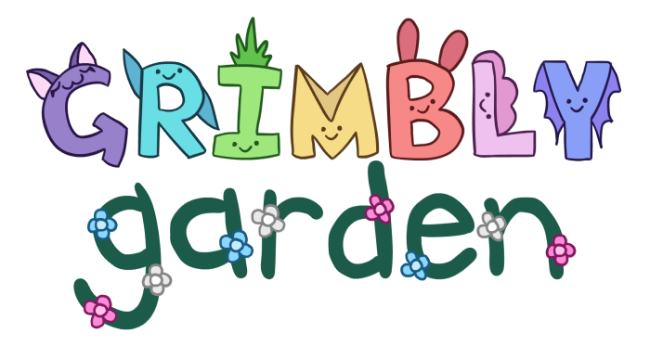

Grimbly Garden is a roguelite creature collection game I am developing where you explore dungeons
to befriend and rescue grimblies to keep and raise in your garden.
Grimbly Garden explores themes such as the magic circle, meta-awareness, agency, preservation, and
pacifism. It also navigates LGBT+ topics and identity. The nature of
the game’s world is slowly revealed over time as the player completes runs, and these themes are
portrayed through how the world and its characters react to these changes.
For reference of what the game is like, some of its inspirations include Slime Rancher 2, Sonic
Adventure 2 Chao Gardens, Inscryption, DELTARUNE, and Cult of the Lamb.
A prototype of the game is available
here,
though treat it as a proof of concept without any of the main gameplay or story elements.